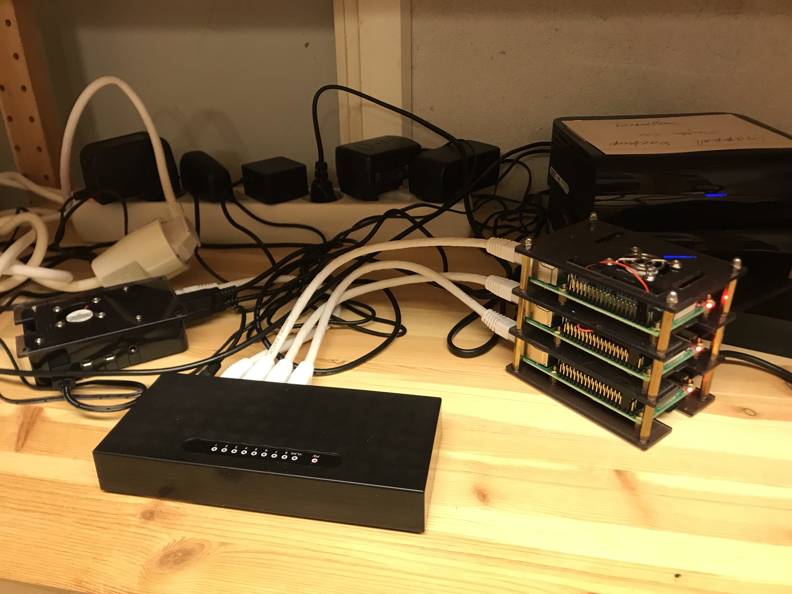
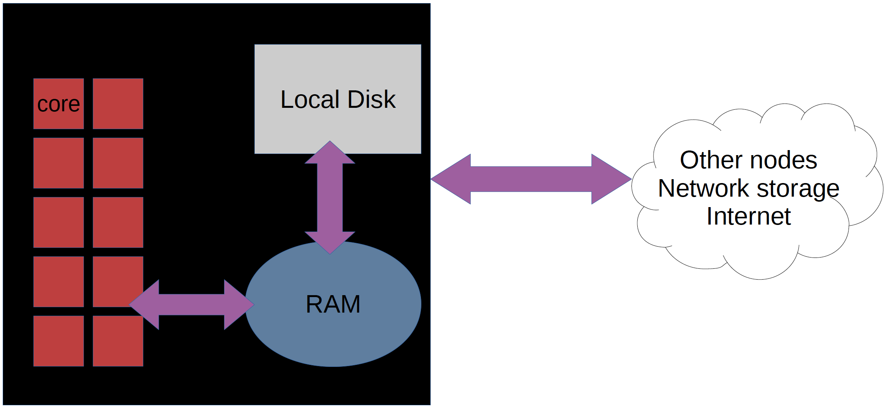
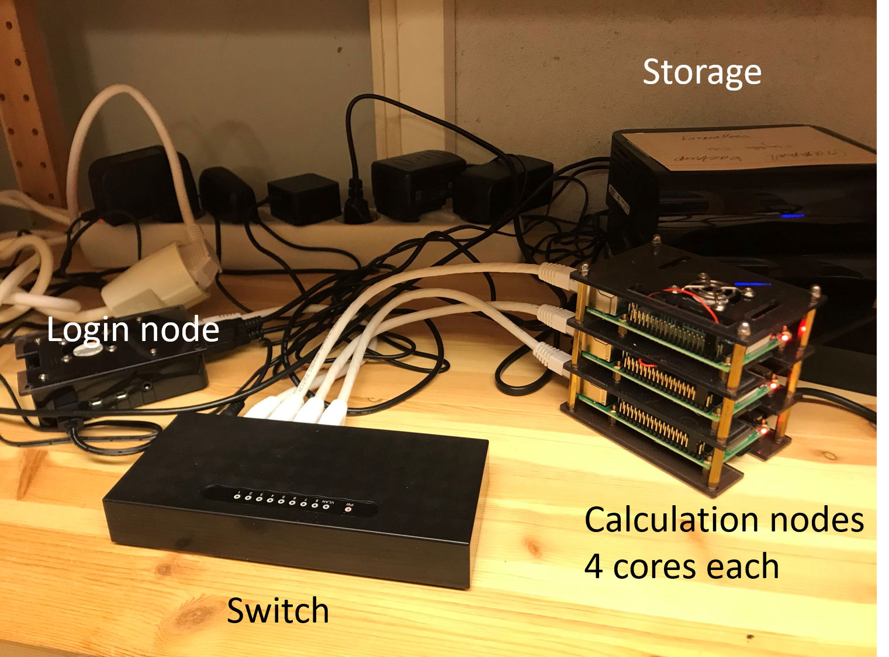

Overview¶
Objectives
- We'll get an overview of UPPMAX and SNIC/NAISS and how a computer cluster works
UPPMAX = UppMACS - Uppsala Multidisciplinary Center for Advanced Computational Science
NAISS¶
- National Academic Infrastructure for Supercomputing in Sweden
-
Mission: to provide a quality high-performance computing environment nationally
-
Starting 1 January 2023, the National Academic Infrastructure for Supercomputing in Sweden (NAISS) is the new organization for high-performance computing, storage, and date services for academic users in Sweden.
- From the users perspective, there will initially only be minimal differences between the SNIC and NAISS regimes.
- FAQ:s — https://www.naiss.se/
- Application rounds: https://www.naiss.se//#application-rounds-for-compute-and-storage-resources
- NAISS and Uppsala University fund UPPMAX — UU’s supercomputing center.
UPPMAX missions¶
- Runs the clusters placed in Uppsala.
- More details in the afternoon about Organisational orienteering!
UPPMAX systems¶
- Clusters
- Rackham (general purpose)
- Snowy (Long runs and GPU:s)
- Bianca (sensitive data)
- Miarka (new for LifeScience)
- Rackham (general purpose)
- Storage
- On-load directly connected to the clusters
- Off-load for large data not needed for computation analysis anymore
- Cloud
- Dis (region EAST-1)
High Performance Computing — HPC¶
What is a cluster?¶
-
A network of computers, each computer working as a node.
-
From small scale RaspberryPi cluster...

- To supercomputers like Rackham.
- Each node contains several processor cores and RAM and a local disk called scratch.

-
The user logs in to login nodes via Internet through ssh or Thinlinc.
-
Here the file management and lighter data analysis can be performed.


- The calculation nodes have to be used for intense computing.
Summary about the three "common" UPPMAX clusters¶
| Rackham | Snowy | Bianca | |
|---|---|---|---|
| Purpose | General-purpose | General-purpose | Sensitive |
| # Nodes (Intel) | 486+144 | 228+ 50 Nvidia T4 GPUs |
288 + 10 nodes á 2 NVIDIA A100 GPUs |
| Cores per node | 20/16 | 16 | 16/64 |
| Memory per node | 128 GB | 128 GB | 128 GB |
| Fat nodes | 256 GB & 1 TB | 256, 512 GB & 4 TB | 256 & 512 GB |
| Local disk (scratch) | 2/3 TB | 4 TB | 4 TB |
| Login nodes | Yes | No (reached from Rackham) | Yes (2 cores and 15 GB) |
| "Home" storage | Domus | Domus | Castor |
| "Project" Storage | Crex, Lutra | Crex, Lutra | Castor |
Overview of the UPPMAX systems¶
graph TB
Node1 -- interactive --> SubGraph2Flow
Node1 -- sbatch --> SubGraph2Flow
subgraph "Snowy"
SubGraph2Flow(calculation nodes)
end
thinlinc -- usr-sensXXX + 2FA + VPN ----> SubGraph1Flow
terminal -- usr --> Node1
terminal -- usr-sensXXX + 2FA + VPN ----> SubGraph1Flow
Node1 -- usr-sensXXX + 2FA + no VPN ----> SubGraph1Flow
subgraph "Bianca"
SubGraph1Flow(Bianca login) -- usr+passwd --> private(private cluster)
private -- interactive --> calcB(calculation nodes)
private -- sbatch --> calcB
end
subgraph "Rackham"
Node1[Login] -- interactive --> Node2[calculation nodes]
Node1 -- sbatch --> Node2
endNext session
We will try the different forms to log in to Bianca!
keypoints
- NAISS makes available large-scale high-performance computing resources, storage capacity, and advanced user support, for Swedish research.
- UPPMAX runs the local resources placed at Uppsala Universty
- A cluster consists of several inter-connected computers that can work individually or together.